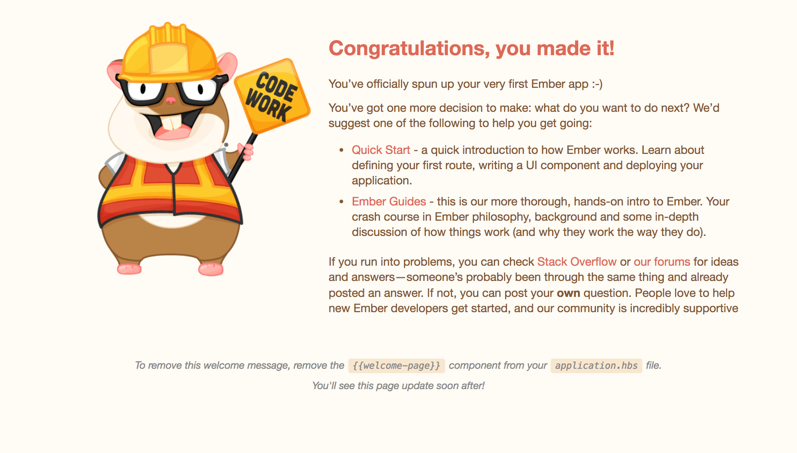

アプリの作成 編集
Emberチュートリアルへようこそ！ このチュートリアルでは、プロレベルのアプリケーションを作成しながらEmberの基本的なコンセプトを紹介していきます。 もしチュートリアルを進めていく中で行き詰まったら、いつでもhttps://github.com/ember-learn/super-rentalsから完成済みの動くサンプルをダウンロードしてみてください。
最新のember-cliのインストールの仕方は、クイックスタートのEmberのインストールの項に記載されてます。
Ember CLI(Emberのコマンドラインインターフェース)は、標準化されたプロジェクト構造や開発用ツール群やアドオン機能を提供します。
それにより開発者は、構造やビルドよりも、アプリの開発に集中できます。
コマンドラインでember --helpを入力すれば、Ember CLIが提供する機能を見ることができます。
さらに各コマンドの詳細を知りたければ、ember help <command-name>と入力してください。
アプリを作成する
Ember CLIで新しいプロジェクトを作る時はnewコマンドを使います。
次のセクションの準備で、super-rentalsというアプリを作ってみましょう。
1 |
ember new super-rentals |
プロジェクトはカレントディレクトリ内に作成された新しいディレクトリ内にあります。
super-rentalsに移動して開発を始めましょう。
1 |
cd super-rentals |
ディレクトリ構成
newコマンドは以下のディレクトリとファイル構成を持つプロジェクトを作成します。
1 2 3 4 5 6 7 8 9 10 11 12 13 |
|--app |--config |--node_modules |--public |--tests |--vendor <other files> ember-cli-build.js package.json README.md testem.js |
Ember CLIが作成したフォルダとファイルを見ていきましょう。
app: モデル、コンポーネント、ルート、テンプレート、CSSのフォルダとファイルを置くところです。Emberアプリのコーディングは、ほとんどがこのフォルダでやることになります。
config: configディレクトリはアプリケーションの設定ができるenvironment.jsがあります。
node_modules / package.json: npmに関連するものです。npmはNode.jsのパッケージマネージャです。EmberはNodeで作られており、Nodeのあらゆる機能を使っています。package.jsonはアプリの依存関係を管理したリストです。Ember CLIアドオンをインストールするとpackage.jsonに追加され、node_modules配下にインストールされます。
public: 画像やフォントなどを置くディレクトリです。
vendor: Bowerによって管理さていないフロントエンドの依存関係(JavaScriptやCSSなど)を置くディレクトリです。
tests / testem.js: アプリの自動テストはtestsフォルダに起きます。Ember CLIのテストランナーのtestemはtestem.jsで設定されています。
ember-cli-build.js: このファイルにはEmber CLIがどのようにアプリをビルドするかを記述します。
ES6モジュール
app/router.jsを見ると、馴染みのない構文に気がつくかもしれません。
| app/router.js | |
1 2 3 4 5 6 7 8 9 10 11 12 |
import EmberRouter from '@ember/routing/router'; import config from './config/environment'; const Router = EmberRouter.extend({ location: config.locationType, rootURL: config.rootURL }); Router.map(function() { }); export default Router; |
Ember CLIはアプリ内のコードを組織するのに、ECMAScript 2015(ES2015、ES6)モジュールを使用しています。
例えば、import EmberRouter from '@ember/routing/router';の行は、EmberのRouterクラスをEmberRouterとしてアクセスできるようします。そして、import config from './config/environment';の行は、configという変数でアプリの設定データにアクセスできるようにしています。
constはリードオンリーな変数を宣言し、他のところで思いがけない再代入がないことを明確にしています。
ファイルの最後部のexport default Router;は、このファイル内で定義されているRouter変数を、アプリの他の部分から利用できるようにしています。
開発サーバ
新しいプロジェクトが設置されましたので、全部きちんと動くか、開発サーバを起動して確かめましょう。
1 |
ember serve |
or, for short:
1 |
ember s |
http://localhost:4200にアクセスすると、デフォルトのウェルカムページが見れるはずです。
app/templates/application.hbsファイルを変更すると、変更した内容に変わるはずです。

まず初めに、このウェルカムページを消しましょう。
app/templates/application.hbsにあるアプリケーションテンプレートを開いてください。
開いたら、{{welcome-page}}を消します。
ブラウザに完全に空白なページが表示されているか確認してください。